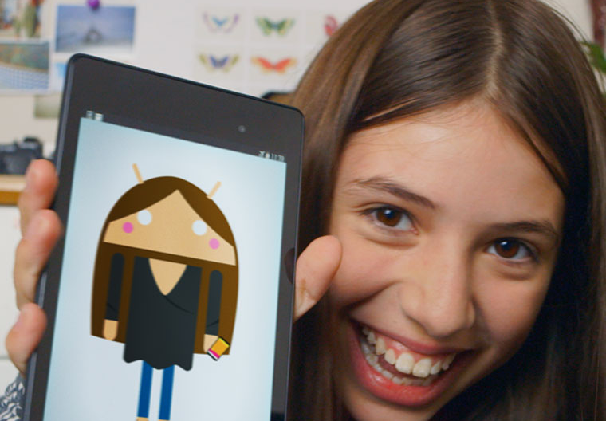

Citizen GO
Les actes citoyens profitent à tous


The best of Google built in
citizenGO works perfectly with your favourite apps like Google Maps, Calendar and YouTube.
Customised by you, for you
Put the stuff that you care about right on your home screen: the latest news, the weather or a stream of your recent photos.
Customise your phone
More from citizenGO

Get going on citizenGO
Four tips to make your switch to citizenGO quick and easy

Create your own citizenGO character
Turn the little green citizenGO mascot into you, your friends, anyone!

Get a clean customisable home screen
A clean, simple, customisable home screen that comes with the power of Google Now: Traffic alerts, weather and much more, just a swipe away.

Millions to choose from
Hail a taxi, find a recipe, run through a temple – Google Play has all the apps and games that let you make your citizenGO device uniquely yours.